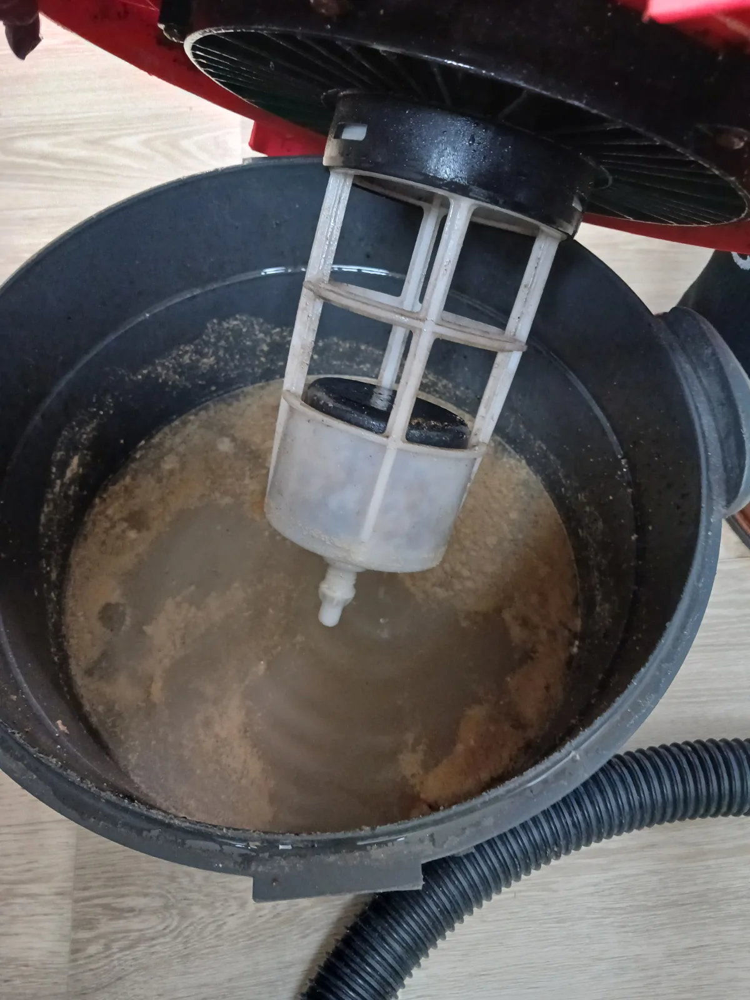
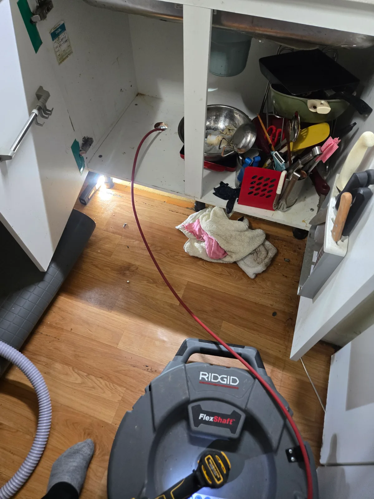

서초구 양재동 싱크대막힘 | 공용배관 하수구막힘 샤프트와 고압세척 해결
서초구 양재동 싱크대막힘 현장에서 실내 배관과 공용배관을 함께 점검한 뒤 샤프트 작업과 고압세척으로 하수구막힘을 해결했습니다
서울 · 서초구 · 싱크대막힘
서초구에서 실제로 해결한 싱크대막힘 사례를 바탕으로 싱크대뚫는업체를 찾을 때 확인할 증상과 작업 방법을 정리했습니다. 물이 천천히 빠지는 증상, 싱크대 물이 안 내려가는 증상, 싱크대 역류, 악취와 반복 막힘 등은 원인이 서로 다를 수 있어 현장 진단 후 필요한 범위를 안내합니다.
물이 천천히 빠지는 증상, 싱크대 물이 안 내려가는 증상, 싱크대 역류, 악취와 반복 막힘처럼 비슷해 보이는 증상도 원인 구간은 다를 수 있습니다. 신라건축설비는 실제 출동 기록을 기준으로 증상·원인·사용 장비·작업 결과를 공개합니다.
주요 점검·작업: 석션·샤프트·배관내시경 점검과 배관 스케일링
싱크대막힘·싱크대뚫는업체 전체 서비스와 지역별 사례 보기 →서초구 양재동 싱크대막힘 현장에서 실내 배관과 공용배관을 함께 점검한 뒤 샤프트 작업과 고압세척으로 하수구막힘을 해결했습니다

서초구 잠원동 싱크대막힘 좁은 싱크대 하부 배수호스를 분리해 기름 슬러지를 석션한 뒤 재조립하고 배수 확인

서초구 방배동 싱크대막힘 싱크대 하부로 내시경과 샤프트를 함께 투입해 막힘 구간을 보며 배관스케일링 진행
같은 배수 불량이라도 막힌 위치와 필요한 작업은 다릅니다. 아래 실제 사례를 통해 점검 범위와 장비 선택 과정을 확인하세요.
좁은 하부 공간에서 배수호스를 분리해 기름 슬러지를 석션하고, 다시 조립한 뒤 배수를 확인한 사례입니다.
배관 내시경과 샤프트를 함께 사용해 오염 구간을 확인하며 배관 벽면을 정리한 사례입니다.
실내 배관과 공용배관을 점검하고 샤프트 작업과 고압세척으로 배수 흐름을 확보한 사례입니다.
한 곳에서만 발생하는지, 다른 배수구나 여러 세대에서도 함께 나타나는지 먼저 확인합니다. 잠원동처럼 하부 연결부에 오염이 집중된 경우와 양재동처럼 공용배관까지 살펴야 하는 경우는 점검 범위가 다릅니다. 증상만으로 공용배관 문제를 확정하지 않고 배관 경로와 현장 상태를 확인합니다.
모든 장비를 일괄 적용하지 않습니다. 회수할 수 있는 오염물은 석션으로 제거하고, 벽면에 붙은 오염층은 샤프트 등으로 정리합니다. 고압세척 여부는 막힌 구간과 배관 상태, 접근 위치를 확인해 결정합니다.
처음 막힌 시점, 반복 여부, 물이 올라오는 위치와 다른 배수구의 상태를 알려주세요. 약품을 사용했다면 제품과 사용 여부도 전달해주세요. 물이 역류하면 사용을 멈추고, 작업 범위와 출장·야간·추가 장비 비용 조건을 작업 전에 확인하세요.
남은 기름과 음식물 건더기를 배수구로 보내지 않고 거름망을 자주 비워주세요. 배수 지연이나 역류가 반복되면 단순히 다시 뚫는 작업에 앞서 남은 오염물과 배관 구조를 점검합니다. 공용 구간이 의심되면 관리사무소와 점검 범위를 협의합니다.